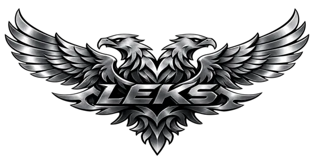

Одно имя — разные формы
Падежи помогают связать действие с переменной: в сумму, к сумме. Морфология развивается и пока не охватывает все случаи.
ЯЗЫК ПРОГРАММИРОВАНИЯ 01 / ЛЕКСИКА
Переменные, условия и правила — русскими словами. Лексика ищет свой способ говорить с компьютером. Попробуйте его сами.

Лексика — экспериментальный язык программирования с русским синтаксисом. Вместо английских ключевых слов здесь можно встретить пусть, если и сказать.
Лексус — его движок. Проект развивается открыто: текущий настольный runtime использует Python, а нативное ядро на C11 постепенно расширяется.
Как устроен движокОдин язык — разные задачи. Выберите образец, посмотрите на результат и продолжите в песочнице.
Открыть песочницупусть сумма = 5;
сумма += 10;
сумма += 2;
сказать(сумма);Лексика сочетает русскую словесную форму с привычными скобками и арифметикой. Поддержка конструкций зависит от выбранного движка.
Падежи помогают связать действие с переменной: в сумму, к сумме. Морфология развивается и пока не охватывает все случаи.
Собирайте программу из понятных действий: если, пока, для каждого и собственных правил.
Используйте числа, речь, перечни и словари. У браузерной учебной версии есть свои ограничения.
Песочница выполняет учебное подмножество языка прямо в браузере. Откройте пример, измените пару слов и посмотрите, что получится.
В песочницуПредварительная сборка для Windows включает Python. Установщик предлагает D:\Лексика и позволяет выбрать другую папку. Он не подписан: браузер или SmartScreen могут предупредить; сверяйте SHA-256 в релизе.
Скачать для Windowssh установить.sh
# или без установки
python3 лексус.lek запустить примеры/привет.lekПолный настольный исполнитель пока работает на Python 3.8+. Параллельно создаётся нативное ядро на C11: в нём уже есть собственные значения, компилятор подмножества языка и виртуальная машина. Полной заменой переходного runtime оно ещё не стало.
Посмотреть план переноса ↗Словарь, примеры, устройство языка — всё открыто для изучения и участия.
Читать руководство ↗Песочница работает в браузере. Для настольной версии нужен Python 3.8 или новее; в установщик Windows он включён.
Сейчас используется расширение .lek, совместимое с переходным загрузчиком. Поддержка .лек запланирована после отказа от Python.
Для настольного исполнения обычных программ интернет не нужен. В браузере сеть нужна для загрузки сайта; внешние модели и API подключаются отдельно.
Да. Правила участия и задачи проекта доступны на GitHub.